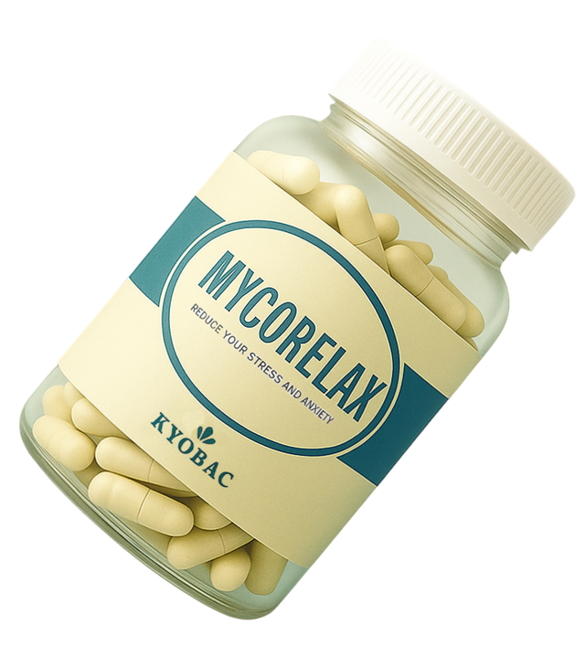

Cuéntanos tu experiencia
Una encuesta anónima de pocos minutos sobre cómo vives el estrés y qué esperas de un complemento. Nos ayuda a diseñar MycoRelax a partir de necesidades reales.
Ir a la encuestaMycoRelax es el postbiótico en desarrollo de Kyobac Labs para la reducción del estrés y la ansiedad. Todavía no está a la venta: estamos en fase de investigación y tu opinión y tu apoyo nos ayudan a avanzar.

Más de 300 personas ya han compartido su experiencia con el estrés y la ansiedad. Cada respuesta y cada aportación nos acerca a un producto mejor.
Una encuesta anónima de pocos minutos sobre cómo vives el estrés y qué esperas de un complemento. Nos ayuda a diseñar MycoRelax a partir de necesidades reales.
Ir a la encuestaTu donación se destina íntegramente a los experimentos de laboratorio que necesitamos para caracterizar la cepa y preparar los primeros estudios en personas.
Bizum: envía tu donación al [número o código de ONG pendiente] con el concepto «Investigación MycoRelax».
MycoRelax no contiene bacterias vivas: se elabora con Mycobacterium kyogaense inactivada por calor, una bacteria aislada del lago Kyoga (Uganda).
Estudiamos un lípido de la bacteria que, en modelos de laboratorio, modula la inflamación. Nuestro objetivo es reducir el estrés y la ansiedad sin somnolencia ni dependencia.
Cultivamos la bacteria en subproductos de la industria alimentaria, como la melaza y el suero lácteo.
Información importante. MycoRelax es un producto en investigación. No es un medicamento ni está autorizado para su venta, y la evidencia disponible procede de estudios preclínicos. Esta página es divulgativa y no sustituye el consejo de un profesional sanitario. Si tienes síntomas de ansiedad, consulta a tu médico.